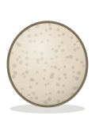
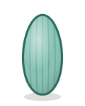
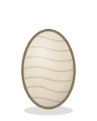
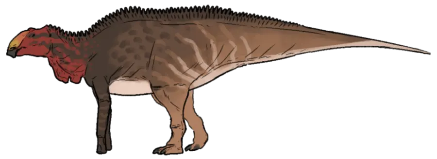
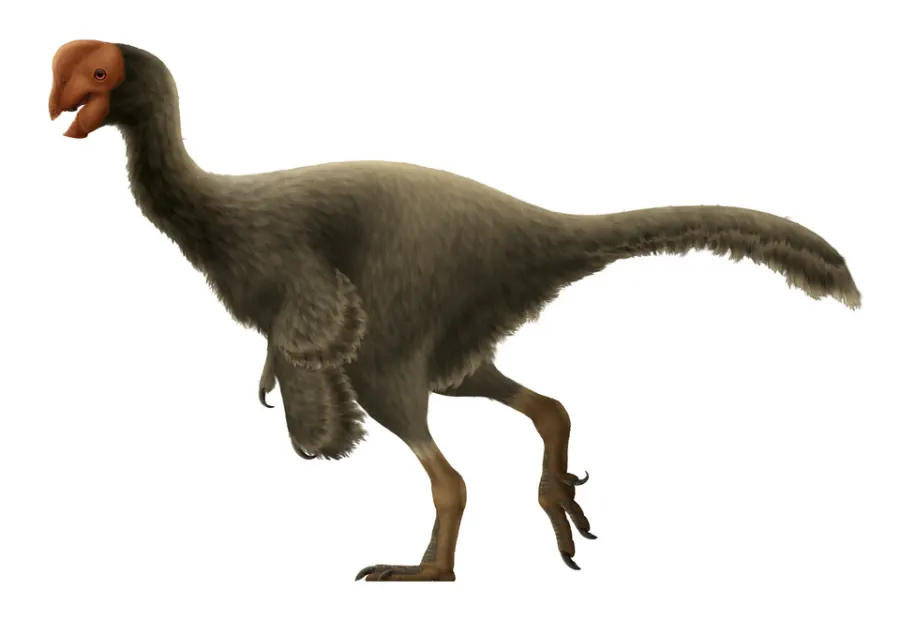
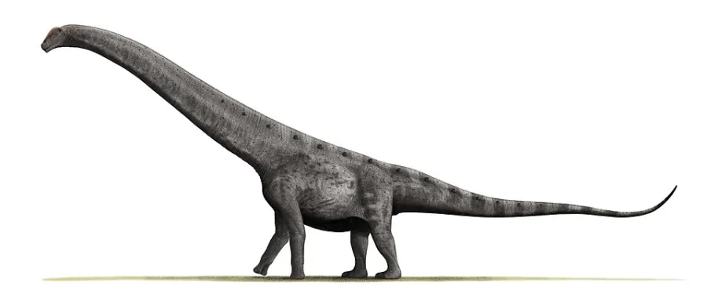

🥚 Œufs et bébés dinosaures
Tous les dinosaures sortaient d’un œuf. Mais pas n’importe lequel : rond ou allongé, dur ou mou, enterré ou couvé… Mène l’enquête !
Tous les dinosaures pondaient des œufs
Comme les oiseaux, les crocodiles et les tortues, tous les dinosaures pondaient des œufs. Même les plus grands ! Le géant Argentinosaurus, qui pesait 70 tonnes, sortait d’un œuf à peine plus gros qu’un pamplemousse.
Pourquoi si petit ? Le bébé respire à travers sa coquille. Un œuf géant aurait eu une coquille si épaisse que l’air n’aurait presque plus pu passer.
Des œufs de toutes les formes

Rond comme une balle
Allongé et coloré
Mou comme du cuir
Certains œufs étaient bien ronds, comme ceux des sauropodes et des thérizinosaures. D’autres étaient allongés, comme ceux de la famille d’Oviraptor.
La plupart avaient une coquille dure, comme les œufs d’oiseaux. Mais en 2020, des scientifiques ont découvert que certains dinosaures, comme le Protoceratops, pondaient des œufs à coquille molle, comme les tortues. Les tout premiers dinosaures pondaient sans doute tous des œufs mous !
Et la couleur ? Le plus souvent, on ne la connaît pas. Mais dans quelques coquilles fossilisées, on a retrouvé des traces de pigments : les œufs de certains cousins d’Oviraptor étaient bleu-vert, et ceux du Deinonychus bleus avec des taches brunes, comme des œufs d’oiseaux d’aujourd’hui.
Des nids très différents
- Enterrés puis abandonnés. Les sauropodes étaient bien trop lourds pour couver. Ils creusaient un trou, y pondaient des dizaines d’œufs, les recouvraient de terre et de plantes, puis s’en allaient. La chaleur du sol faisait le reste.
- Couvés comme par une poule. Les oviraptors pondaient leurs œufs deux par deux, en cercle, puis s’asseyaient au milieu et les couvraient de leurs bras emplumés. Chez certaines espèces, c’était peut-être même le papa qui couvait !
- En colonie. Les Maiasaura et les thérizinosaures installaient leurs nids les uns à côté des autres, comme les oiseaux de mer aujourd’hui. À plusieurs, on surveille mieux les œufs !
Des parents attentionnés ?
Pendant longtemps, on a imaginé les dinosaures comme de mauvais parents, qui pondaient puis disparaissaient. Deux découvertes ont tout changé.
En 1978, dans le Montana, on découvre des nids de Maiasaura remplis de bébés de plusieurs tailles : les petits restaient au nid, et leurs parents les nourrissaient sûrement. Puis, en 1993, on comprend que l’Oviraptor, accusé de voler des œufs, couvait en réalité les siens.
Mais tous les dinosaures n’étaient pas aussi attentionnés : beaucoup de bébés devaient se débrouiller seuls dès leur sortie de l’œuf.
Les bébés dinosaures
Les bébés étaient minuscules à côté de leurs parents, mais ils grandissaient très vite. Un bébé Maiasaura mesurait 40 centimètres à la naissance… et près d’un mètre et demi un an plus tard.
Parfois, on retrouve même des bébés encore dans leur œuf : on les appelle des embryons. En Argentine, des embryons de sauropodes ont été découverts avec des morceaux de peau fossilisée, couverte de minuscules écailles !
En Chine, des œufs de ptérosaures ont révélé un autre secret : à la naissance, leurs bébés savaient déjà marcher, mais leurs ailes n’étaient pas encore assez solides pour voler.
À qui est cet œuf ? Une vraie enquête
Trouver un œuf fossile, c’est déjà difficile. Savoir qui l’a pondu, c’est encore plus compliqué ! Pour en être sûr, il faut retrouver un bébé à l’intérieur, ou un adulte assis sur son nid.
C’est pour ça qu’on ne connaît toujours pas les œufs du T-rex, du Tricératops ou du Stégosaure. Les scientifiques classent donc les œufs par familles, d’après leur forme, leur taille et leur coquille.
Des œufs en France
La France est un pays d’œufs de dinosaures ! Au pied de la montagne Sainte-Victoire, près d’Aix-en-Provence, une réserve naturelle cache l’un des plus grands gisements d’Europe. On y trouve surtout des œufs de titanosaures, des sauropodes, vieux d’environ 70 millions d’années.
C’est aussi en France, dans les Pyrénées, qu’un prêtre passionné de fossiles, Jean-Jacques Pouech, a décrit en 1859 les premiers morceaux de coquilles d’œufs de dinosaures. Il pensait alors qu’ils venaient d’un oiseau géant !
Ces sites sont protégés : il est interdit d’y ramasser des fossiles.
📊 Les œufs en chiffres
| Œufs dans un nid de Maiasaura | 30 à 40 |
|---|---|
| Œufs de ptérosaures trouvés au même endroit, en Chine | 215 |
| Bébés éclos dans une colonie de thérizinosaures | Plus de la moitié |
| Premières coquilles décrites | En 1859, en France |
| Œufs de T-rex connus | Aucun, pour l’instant ! |
🔍 Indices pour le jeu
Dans « Retrouve la maman », tu dois rendre chaque œuf à ses parents. Quelques conseils de détective :
- Regarde d’abord la forme : ronde ou allongée ?
- Les géants ne pouvaient pas s’asseoir sur leurs œufs : ils les enterraient.
- Une coquille colorée ? Pense aux dinosaures à plumes, les cousins des oiseaux.
- Une coquille molle comme du cuir ? Son propriétaire enterrait ses œufs dans le sable, comme une tortue.
- N’oublie pas que les oiseaux sont des dinosaures…
⚠️ Attention aux intrus
Tous les animaux de l’époque ne pondaient pas ! Les ichthyosaures et les mosasaures, qui vivaient en pleine mer, donnaient naissance à des bébés vivants, directement dans l’eau.
Les héros de ce dossier

Maiasaura La « bonne mère » : le premier dinosaure dont on a prouvé qu’il élevait ses petits. 🌸 Crétacé 🌿 Herbivore
Oviraptor Accusé pendant 70 ans de voler des œufs… alors qu’il couvait les siens ! 🌸 Crétacé 🍽️ Omnivore
Argentinosaurus Le plus grand animal terrestre de tous les temps : 35 mètres et 70 tonnes ! 🌸 Crétacé 🌿 Herbivore